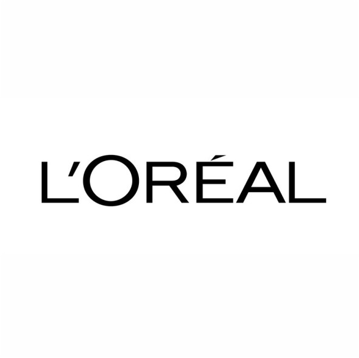
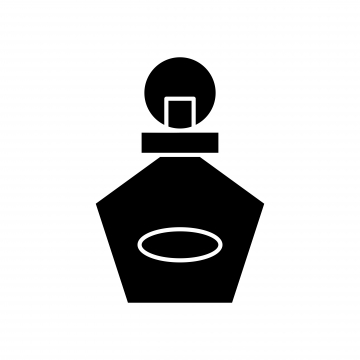
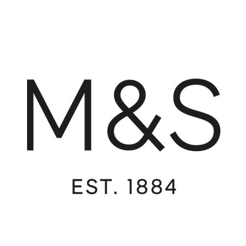
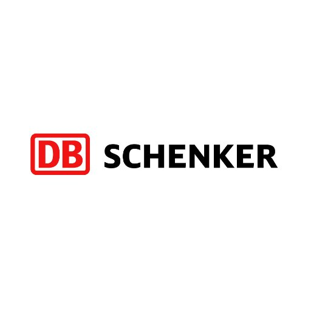

PAST EXPERIENCE

Product Manager
L'Oreal Canada
May 2018 - January 2020
Successfully Launched 6 new fragrances in Canada for Ralph Lauren, Diesel & Cacharel .Grew
Market Share by 11% by determining the market trend, competition & pricing strategy; planned
and executed a 360 marketing plans, through digital and instore activations for brand
development.
Boosted sales for Ralph Lauren Romance fragrance by 35% during Valentine’s Day by analyzing
market data and creating a special promotional set. Managed agencies to ensure a high level
visibility by translating objective into deliverables including a personalized customer
service, sampling and experiential consumer events.
Increased the brand awareness for Ralph Lauren Fragrances to top #3 in Canada by developing
&
leading strategies with various stakeholders and collaborating with the Media Agency to
execute
online awareness campaigns. Also collaborated with the retailer to execute a massive
sampling
program to drive sales.

Brand Manager - Fragrance
Inter African Marketing, Nigeria
August 2014 - April 2018
Developed the marketing plans for 8 PUIG fragrance brands across 13 African countries.
Improved Market Share by 21% in Kenya by analyzing the sell-out data and executing commercial
online growth strategies.
Achieved growth in Net Sales by 46% by developing the Sales Quotas/Budgets for the Sales Team
and implementing activations and trade shows for new product launches
Managed yearly budget of €5million (7.6million CAD) and maintained the marketing calendar.
Assisted the retailers with their e-commerce platform by providing the content, videos and
images from the brand’s creative team.

Order Management Analyst
Marks & Spencer plc, UK
July 2013 - January 2014
Maintained efficiency in the processing and dispatch of 1000 plus e-commerce orders daily,
whilst monitoring the state-of-art automated Warehouse Management systems (Red Prairie and
Schafer) of 1 Million primed items.

Procurement Assistant
DB Schenker, UK
June 2013 - July 2013
Supported daily procurement activities including scheduling material purchases, estimating
arrival time, conducting supplier reviews and evaluating tenders.
Created and tracked more than 110 PO’s weekly using the SAP system across 30 plus suppliers.
Posted Goods Receipt and processed invoices.